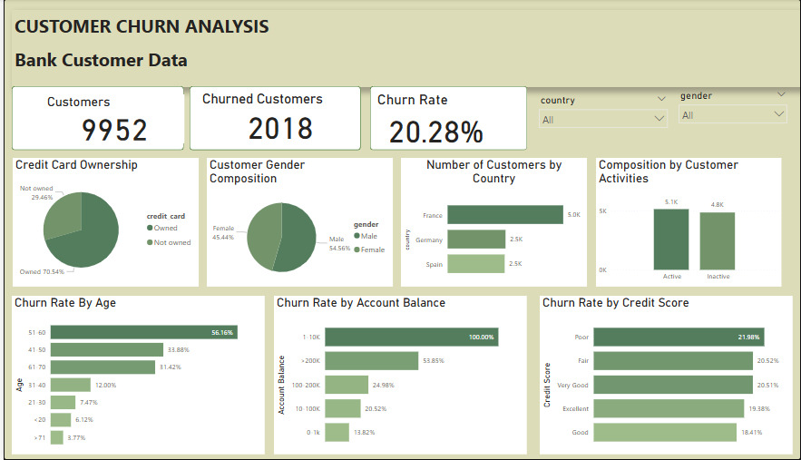
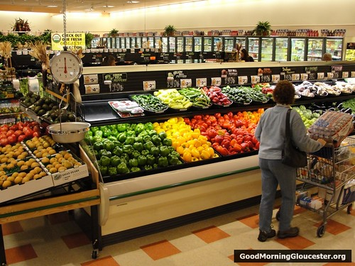

Hospital Emergency Room
This report highlights key performance metrics for a period between 2023 and 2024, in a clear and professional format. It highlights patient flow, wait times, satisfaction scores, and demographic insights through intuitive visualizations. The project showcases strong data visualization skills tailored for healthcare analytics and executive reporting
.


An interactive sales dashboard providing insights into coffee product performance across regions, time periods, and product categories. It enables dynamic filtering by month, region, and product type, helping stakeholders identify top-performing products, regional trends, and seasonal sales patterns. Designed with a clean layout, slicers, and visual drillthroughs to support strategic decision-making and performance tracking

This project aims to address the issue of bank customer churn by leveraging Power BI for data analysis. Key variables such as credit score, account balance, and customer age are analyzed to evaluate their impact on the bank's customer retention and overall growth.

This Ecommerce Sales Dashboard provides a comprehensive overview of online business performance, highlighting key metrics across various dimensions such as geographic markets, product categories, and payment methods. It supports effective business reporting by presenting critical insights that facilitate data-driven decision-making.

I created this HR Attrition Dashboard to explore and better understand employee turnover within a company. It highlights key metrics like overall attrition and the number of current employees, and also breaks down retention and attrition rates by department and job role. One of the key insights was the noticeable variation in turnover, especially in the Sales and Research & Development (R&D) departments.

For this project, I'm analyzing shopping patterns for a retail company to uncover which products customers frequently buy together. This market basket analysis reveals valuable insights into customer behavior that can help the company enhance customer satisfaction, make more strategic decisions, and boost sales.

This project analyzes the air quality index in Nairobi based on PM 2.5 readings. This involves data wrangling, EDA, and time series analysis using linear regression.